``Electronic Works''で紹介している、箱に入れただけスイッチング電源「POWERBOX-5V」や、8bit-TTL汎用データ入力装置「SIN-8」のシャーシ・パネルの作成方法です。
普通、電子機器の多くは、その制御パネルのスイッチなどがどんな機能を持っているかを表すために、スイッチの近くに文字やアイコンを表示します。この表示方法は市販製品などの場合には、パネル面に直接シルク印刷されていたり、彫刻されていたりします。一方、個人で作る機器の場合、このような手法をとることはコストの面などから難しく、簡単な場合にはテプラやネームランドのような簡易プリンタで文字ラベルを作成し、これをスイッチの近くに貼る、或いはパネルに直接、転写式レタリングシートを用いて表示したりします。しかしこれらの方法は簡単ですがあまり凝ったデザインのパネルを作成することはできません。そこで個人で作る場合に、インクジェット・プリンタを用いて、より凝ったデザインを実現できる手法を紹介します。
| 必要機材 | 例 |
|---|---|
| ドロー系（ベクトル系）描画ソフト | Corel Draw 11 |
| インクジェット・プリンタ | EPSON PM-780C |
| フィルム・ラベル用紙 | A-one A4サイズ 光沢白フィルムラベル(28797) |
| 他工具類 | カッター、はさみ、センターポンチ、電気ドリルなど |
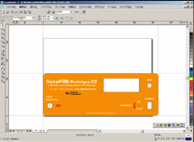 |
まずドロー・ソフトで、原寸大でパネルをデザインします。私は普段Corel Drawというソフトを使っています。Corel Drawの場合、まずガイドラインでパネルの全体サイズをとり、「ガイドラインにスナップ」を有効にしてから、穴位置や文字などのデザインを行います。ガイドラインは上の方に表示されるボックス(オブジェクトの配置)で数値指定により移動できるので、まず基準線を決めてから、その相対値で配置することができます。 |
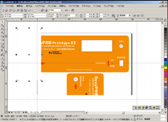 |
デザインが完了したら、印刷します。パネルが印刷可能な用紙（印刷範囲）よりも小さい場合には問題ないのですが、大きい場合には分割して印刷するとよいでしょう。貼るときにうまく合わせられるように、各パーツはオーバーラップするよう、余裕を持たせて印刷します。このときはみ出した部分は白く塗りつぶしたボックスなどを前面に持ってきて配置すると調整がしやすいと思います。 |
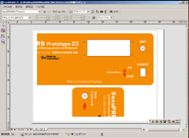 |
印刷プレビューで確認後、印刷しますが、先に、きちんとスケールや穴位置などがあっているかを普通紙にドラフト印刷して確認します。デザインの段階でなんどもやることになるかもしれませんが・・ |
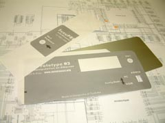 |
実際にパネルに当てて、穴位置などにずれがないかを確認するため、カッターなどで印刷した用紙を切り抜くなどするとよいでしょう。 |
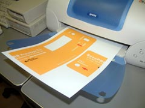 |
確認ができたら、インクジェット対応のラベル用紙に印刷します。今のところ、お勧めはエーワン(株)の光沢＜白＞フィルムラベルです。もっと良いものがあったら教えてください。 |
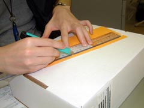 |
印刷が終わって乾いたら、はさみとカッターで余分な部分を切り取ります。 |
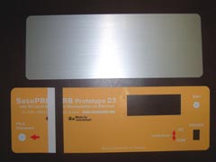 |
上：対象のアルミ・パネル 下：切り抜いたラベル用紙 |
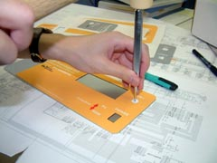 |
パネルの穴位置などは、長さを測って決定しても構いませんが、精度が要求されない場合には完成したラベル用紙を上に載せて、その上からセンターポンチで叩けば簡単に穴位置が出せます。 |
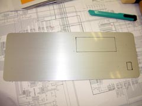 |
穴位置を出したアルミ・パネル |
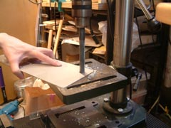 |
パネルの加工を行います。 |
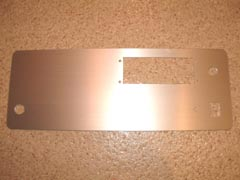 |
加工が終わったアルミ・パネル |
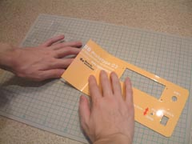 |
作成したフィルム・ラベルをアルミ・パネルに貼ります。このとき気泡ができないように、端から少しずつ貼っていきます。 |
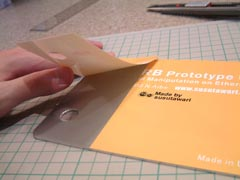 |
印刷範囲よりも対象となるパネルが大きい場合はパーツ（ラベル用紙）毎に分けて貼ります。このとき後から貼るパーツは、隅だけ保護シールを剥がして位置合わせを行います。 |
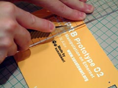 |
保護シールを全部取り去る前に、他方のパーツと重なる余分な部分を取り除きます。このとき重なった部分は、まとめて重ね切り？（カーペットなどを合わせるときによく使われる方法です）をすると仕上がりが凸凹しなくてよいです。 |
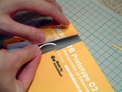 |
それぞれの余分な部分を取り除きます。 |
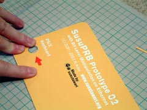 |
保護シールを全部剥がして張り合わせれば完成です。 |
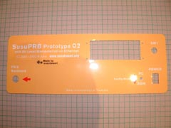 |
完成したパネル |
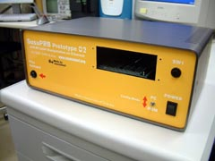 |
ケースに組み付けたパネル （そこには、LCDディスプレイモジュールが入る予定。） |